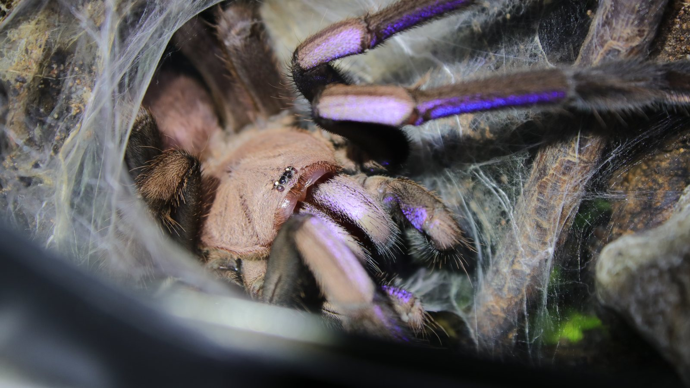
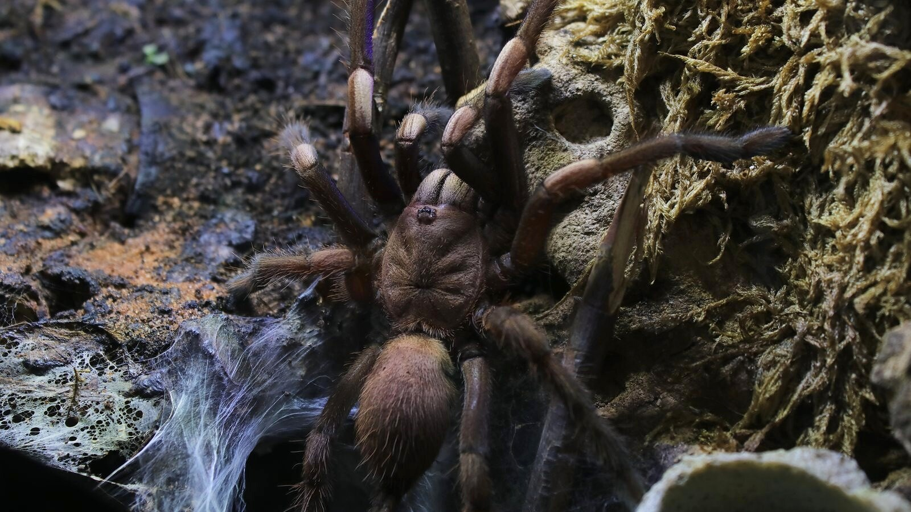
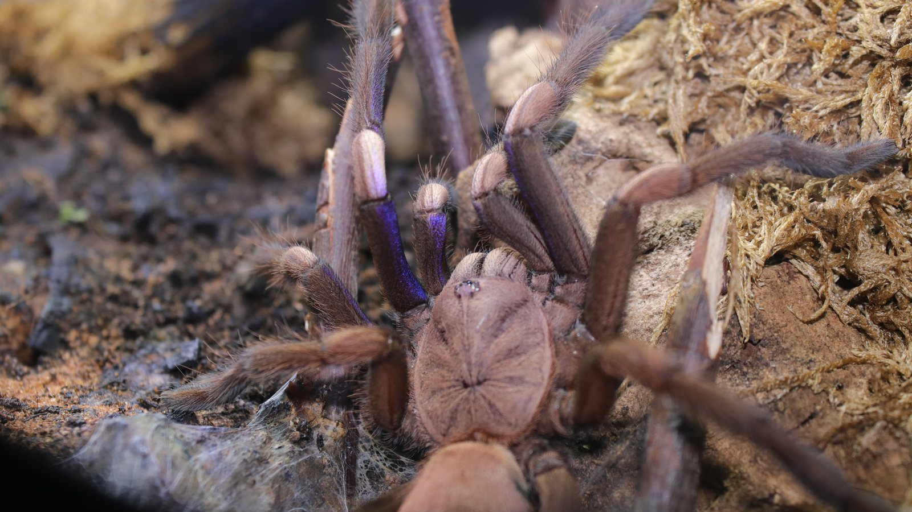

Introvertebrates on YouTube
Chilobrachys natanicharum: The most beautiful tarantula
A species-focused look at the electric-blue tarantula represented in the collection by Elvira.
Species profile · Current resident
Meet Elvira
Elvira is the Chilobrachys natanicharum currently in my care. Her profile portrait uses the darkness of the retreat to isolate the eyes and carapace.

In the wild
Chilobrachys natanicharum was formally described from Thailand in 2023. Before that publication, the electric-blue form was already known in the pet trade, but it lacked a published scientific description tying the name to diagnostic material.
The original ZooKeys paper provides the taxonomic baseline for the species and documents the blue structural colour that made it conspicuous. Elvira’s portrait adds an individual collection record without replacing that formal description.
In my care
Elvira is the individual behind this profile. Her collection record connects the recently described electric-blue species with a named resident whose feeding, molts, and development can be followed over time.



From the channel
A species-focused look at the electric-blue tarantula represented in the collection by Elvira.
Personal observations
A privacy-safe summary of this resident’s time in care, feeding outcomes, molts, and measurements. These are observations from the Introvertebrates collection, not species-wide averages.
Awaiting a privacy-reviewed Codex export. No invented statistics are shown.
Never published here: raw notes, record IDs, seller or breeder details, enclosure identifiers, local file paths, or exact private event dates.
Continue exploring
Read further